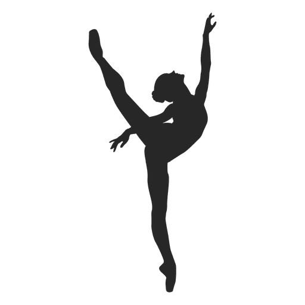
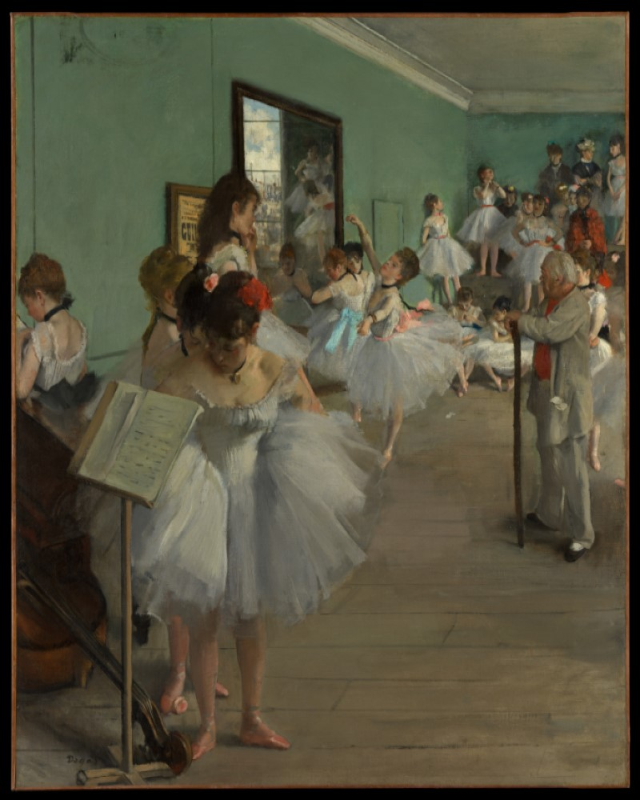
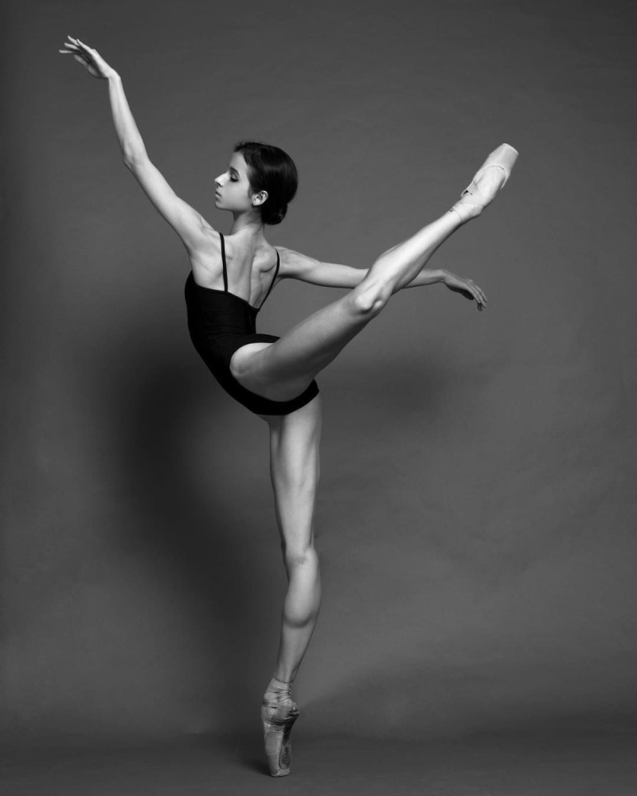

Uvod u balet

Balet je vrsta izvedbenog plesa koji je nastao tokom italijanske renesanse u petnaestom veku, a kasnije se razvio u koncertnu
plesnu formu u Francuskoj i Rusiji. Od tada je postao široko rasprostranjen i visoko tehnički oblik plesa sa sopstvenim rečnikom.
Balet je bio uticajan na globalnom nivou i definisao je osnovne tehnike koje se koriste u mnogim drugim plesnim žanrovima
i kulturama. Različite škole širom sveta su ugradile svoje kulture. Kao rezultat toga, balet je evoluirao na različite načine.
Balet kao jedinstveno delo obuhvata koreografiju i muziku za baletsku produkciju.
Balete koreografišu i izvode profesionalno trenirani baletski igrači. Tradicionalni klasični baleti se obično izvode uz
pratnju klasične muzike i koriste složene kostime i scenografiju, dok se moderni baleti često izvode u jednostavnim kostimima i
bez složenih scenografija.

